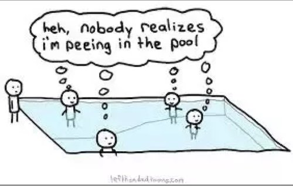

“Always remember that you are absolutely unique. Just like everyone else.”
--Margaret Mead
"There are no new thoughts, they're all recycled."
--Byron Katie
When you hear from as many folks as I have over the years, listening to people recite their feelings, issues, problems and wishes, you begin to notice something.
You begin to see that while of course, everyone’s day to day circumstances are totally unique and one of a kind, the way everyone experiences and talks about problems is shockingly all the same.
You begin to see the mind-patterns that come with being a person.
All people talk about problems using the exact same words. Sometimes word for word.
Like a song with memorized lyrics.
Around the world, regardless of age and situation, thought has a literal script, which it recites throughout lifetimes, and generations.
Lives are being lived on script.
While no one person says all of the available script, everyone, without exception, says some of it.
Like a menu- pick your special:
This is the problem:
Something’s not right. Something’s not OK.
This is how it feels:
A contraction, a tension, a heaviness, an emptiness, a sense.
This is what's needed:
Peace, others’ love, safety, motivation, energy, control, sleep, money, success, health, loved ones to stay forever, equanimity, change, others’ right behavior, better feelings.
This is what it means:
Bad person, loser, unlovable, lazy, weak, broken, not social enough, not confidant enough, not kind enough, not enlightened enough, just plain not enough, wasted life.
This is the cause (the why):
Trauma, the past, wasted potential, wrong choices, wrong actions, others.
The script is common, predictable, unoriginal, repetitive, and the same everywhere.
Additionally on this menu is the obligatory idea that these thoughts are “yours.”
Supposedly they happen specifically to you, in your own head.
Conveniently creating that unique, difficult, and singular- you.
Proving your separateness, proving your distinction from everything and everyone else.
The thought script enables the sense of “Me.”
When actually, it’s community property.
The mind is a collective.
Everyone dips from the same pool.
Which means not one of those thoughts belongs to you.
Not one is actually about you at all.
Mind is just singing its song. Reciting its words.
Thought constructs a “reality” using this small, unoriginal handful of words.
All while insisting how unique we are.
Now, you could be thrilled to learn that you’re not alone, not special, and that these thoughts aren’t yours or particular to you.
But more likely, you are disbelieving, feeling misunderstood, perhaps annoyed, and mentally arguing for your special personal pain and messed-upness.
“No way!” you may be saying. “My situation is different, My situation is worse. Other people don’t suffer like this. Other people aren’t this messed up. It’s me. I’m different.”
Surprise! All that special-you stuff is part of the script too.
Luckily though, whether you believe it or not, this community pool is actually good news.
Because if thoughts are not yours and not about you,
even though they appear to be, even if they insist so,
Then what you are becomes unclear.
Harder to pin down. Perhaps even harder to hurt.
Since the person hurting becomes harder to find.
Which unpredictably
may provide relief and
a not-taking-things-seriously lightness
which just might turn out to be
a special
not on the usual menu.
Scripts
